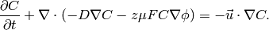
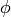
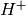
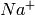
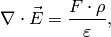
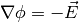
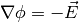
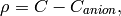

Poisson Nernst-Planck Equation¶
This section describes how to make a weak form presentation of Poisson and Nernst-Planck equation system. The Nernst-Planck equation is often used to describe the diffusion, convection, and migration of charged particles:
(1)
The second term on the left side is diffusion and the third term is
the migration that is directly related to the the local voltage
(often externally applied) . The term on the right side is
convection. This is not considered in the current example. The variable
 is the concentration of the particles at any point of a domain
and this is the unknown of the equation.
is the concentration of the particles at any point of a domain
and this is the unknown of the equation.
One application for the equation is to calculate charge configuration in ionic polymer transducers. Ionic polymer-metal composite is for instance an electromechanical actuator which is basically a thin polymer sheet that is coated with precious metal electrodes on both sides. The polymer contains fixed anions and mobile cations such as ,  along with some kind of solvent, most often water.
When an voltage  is applied to the electrodes, the mobile cations
start to migrate whereas immobile anions remain attached to the polymer
backbone. This creates spatial charges, especially near the electrodes.
One way to describe this system is to solve Nernst-Planck equation
for mobile cations and use Poisson equation to describe the electric
field formation inside the polymer. The poisson equation is
is applied to the electrodes, the mobile cations
start to migrate whereas immobile anions remain attached to the polymer
backbone. This creates spatial charges, especially near the electrodes.
One way to describe this system is to solve Nernst-Planck equation
for mobile cations and use Poisson equation to describe the electric
field formation inside the polymer. The poisson equation is
(2)
where  could be written as  and
could be written as  and  is
charge density,
is
charge density,  is Faraday constant and
is Faraday constant and  is dielectric
permittivity. The term could be written as:
is dielectric
permittivity. The term could be written as:
(3)
where  is a constant and equals anion concentration. Apparently
for IPMC, the initial spatial concentration of anions and cations are equal.
The inital configuration is shown (couresy of D. Pugal):
is a constant and equals anion concentration. Apparently
for IPMC, the initial spatial concentration of anions and cations are equal.
The inital configuration is shown (couresy of D. Pugal):
The purploe dots are mobile cations. When a voltage is applied, the anions drift (courtesy of D. Pugal):
This eventually results in actuation (mostly bending) of the material.
To solve equations (1) and (2) boundary conditions must be specified as well. When solving in 2D, just a cross section is considered. The boundaries are shown in (courtesy of D. Pugal):
For Nernst-Planck equation (1), all the boundaries have the same, insulation boundary conditions:
(4)
For Poisson equation:
- (positive voltage):
- (ground):
- (insulation):